Actividad 1.1: Instalación del SO en ambiente gráfico
En este punto enseñaremos el paso a paso para instlar el sistema operativo ubuntu
1. correr la ISO
Bootea tu equipo con el equipo donde hayas descargado la iso, ya sea en un cd, usb, etc.

Después de haber booteado el equipo con el dispositivo en el que hayas descargado la iso, te aparecerá la interfaz de arriba. A continuación, elegiremos la opción “Try or install ubuntu”.
Esto nos llevará de inmediato a la configuración de instalación mediante la interfaz gráfica Gnome
2. Idioma del equipo
En este menú podrás elegir el idioma que quieras para tu equipo. De entre las opciones elige el idioma que desees y luego le das a siguientes.
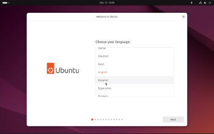3. Accesibilidad
El siguiente menú será el de accesibilidad. En este podrás elegir entre los diferentes tipos de configuraciones de personalización en torno a: la visión, audición, mecanografía, señar y apuntar y la ampliación.
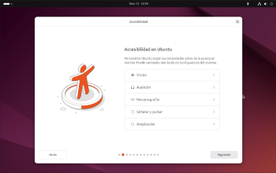 >4. Disposición del teclado
En este menú podrás elegir la disposición del teclado, el idioma del mismo, y las diferentes tipos de disposiciones que existen, Qwerty, Azerty, Qwertz entre otros.
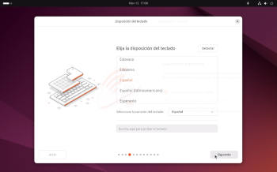5. Instalación interactiva
El siguiente menú te ofrece los tipos de instalaciones en Linux Ubuntu. Para esta ocasión elegiremos la primera opción, instalación interactiva. Ya que estamos enseñando el paso a paso de como instalar este SO.
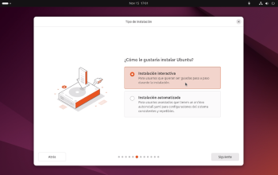Para una persona que ya tenía instalado este SO antes y tiene un archivo de su configuración pasada. La segunda opción será preferible para él.
Partcion del disco
6. ¿Cómo quieres instalar ubuntu?
Al igual que el ante menú, en este tenemos dos opciones. Para un usuario del común. La opción ideal para el sería la primera. Que borra el disco y lo particiona completamente.
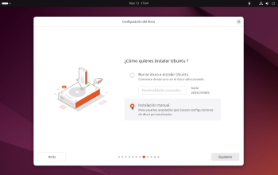Pero para este ejemplo y para los raritos que les gusto hacer todo a mano. Elegiremos la instalación manual.
7. Partción manual
Luego de haber elegido la anterior opción, se nos presentara el siguiente menú. En este menú podremos crear todas las particiones necesarias para nuestro disco.
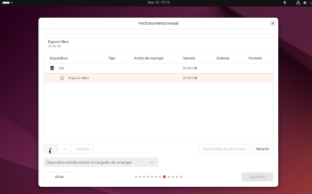Para crear una partición nueva, además de seleccionar el disco, tienes que hacer click en el botón “+”. Automáticamente te mostrara una pequeña ventana emergente con las opciones de particionado. Tamaño, tipo de partición, y punto de montaje.
8. Crear la partición boot
En este punto se anexa la configuración para crear la partición “boot”, encargada del arranque del equipo al momento de encender el mismo.
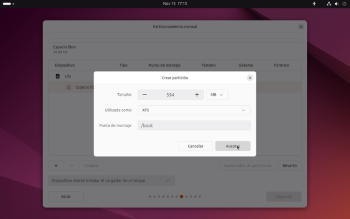9. Crear la partición swap
En este punto se anexa la configuración para crear la partición “swap”. Partición encargada en ser una extensión de la memoria RAM.
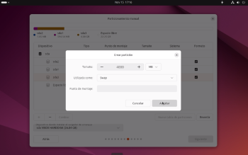10. Crear la particion raiz "/"
En este punto se anexa la configura para la creación de la partición “/” o partición “raíz” del equipo.

11. Crear la partcion home
En este punto se anexa la configuración para la creación de la partición “home” partición necesaria donde se encontrará todos los archivos que cree el usuario del equipo.
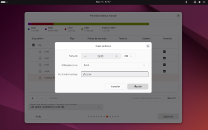12. esquema de particion
En este punto se anexa como debería de quedar el esquema de partición luego de hacer la partición manual.
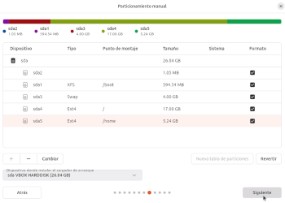13. Crear la cuenta de usuario
Luego de haber hecho la partición manual. O de haber elegido la opción de borrar el disco y particionar manualmente, el siguiente menú que aparecerá será el de crear usuario o crear cuenta.
Como bien dice su nombre, aquí creas tu usuario, tu nombre, nombre del equipo y contraseña.

14. configurar zona horaria
Luego de crear el usuario el siguiente menú es el de la configuración de zona horaria. Procura colocar bien tu zona horaria.
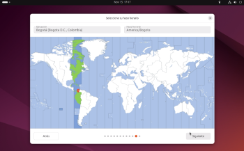Resumen de configuración
Por ultimo. Se te muestra un resumen de las configuraciones que elegiste para tu SO. Luego de que revises si todo está correcto. Le das a instalar y eso sería todo. Acaba de instalar Linux Ubuntu en ambiente gráfico. Felicidades.
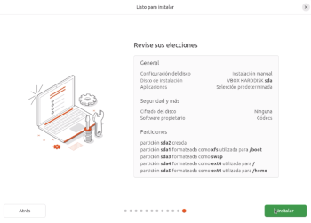A continuación, se anexará el link que llevará a el video de la instalación en ambiente gráfico y al video de los navegadores y ide funcionando en el SO: link
Activida 1.2: inalacion del SO en consola
En este punto anexaremos los pasos para instalar el SO fedora server mediante consola
1.Correr la iso
Para instalar el SO Fedora server específicamente por consola. Antes tenemos que hacer una serie de pasas, ya que para versiones más recientes de fedora server, no deja instalar el SO mediante consola si no haces lo siguiente:
1.seleccion “*instal Fedora 43” (No presiones enter, solo seleccionalo)
2.Luego de seleccionar, presiona la tecla “e” (editar opciones de arranque)
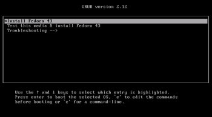Te debe de aparecer como la imagen de arriba.
3.escribe el comando: inst.text (en el espacio que este subrayado de azul)
4.luego, presión la combinación de teclas Ctrl + x. esto iniciará el instalador otra vez.
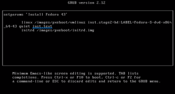2. Text mode
Luego de hacer los pasos anteriores e inciar el instalador nuevamente. Elige la opción número 2. Esto hará que la instalación sea por consola.
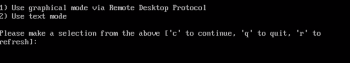Luego de elegir la opcion anterior dicha. Te aparece el menú de arriba. Este será tu menú de configuración del SO
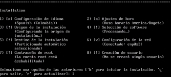3. Configuración del idioma
Par acceder a la configuración del idioma. elige la opción 1. Te aparecerá el siguiente menú. Según el idioma que desea digita el número que se le asigne al lenguaje.
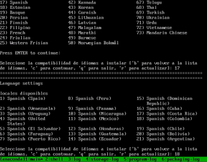4. Zona horaria
Para acceder a la configuración de la Zona horaria. Elige la opción 2. Te aparecerá el siguiente menú. Luego elige la opción 1: Según la zona horaria que desees, digita el número que se le asigne a la zona.
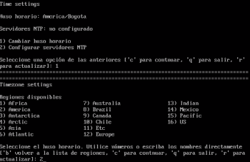Configuración de red
Los siguientes dos puntos serán alrededor de la configuración de red del sistema. Para acceder al menú deben de elegir la opción 6.
5. Nombre del sistema
Ya dentro del menú de configuración de red. Elige la opción 1 y digita el nombre que le quieras dar al sistema.
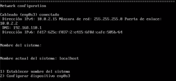6. Configurar dispositivo emp0s3
Luego de establecer el nombre del sistema. Elige la opción número 2 para terminar de configurar la red. Según la necesidad de cada usuario pueden modificar o no las opciones que aparecen en el menú.
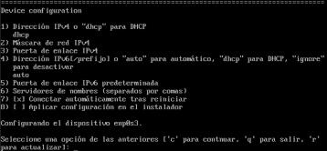7.Establecer contraseña de root
Luego de configurar la red. Elige la opción 7 para acceder al menú de establecer contraseña de root. El root es un rol importante que se encarga de otorgar o denegar x o y permisos.
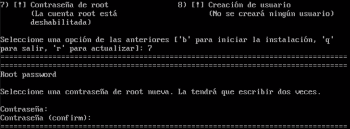8.Creacion de usuario
Ya para terminar. Elegie la opción número 8. en este menú podrás crear tu usuario y establecer una contraseña para el equipo.
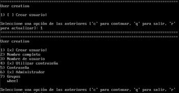9.Instalación
Antes de iniciar la instalación. Revisa que todas las opciones estén marcadas con “x”. Como aparece en la siguiente imagen, de ser así., presiona “b” para iniciar la instalación
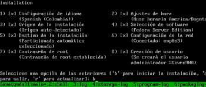PD: El instalador de Fedora server mediante consola no permite hacer la partición manual del disco, por lo que simplemente elige la opción de borrar el disco y utilizarlo completamente.
10.Login
Terminada la isntalacion incia el equipo nuevamente y inicia sesión con el nombre de usuario que creas anteriormente y la contraseña.
Si hiciste todo correctamente te ha de aparecer como en la siguiente imagen:
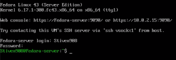 A continuación, se anexará el link que llevará a el video de la instalación en consola: Links